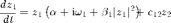
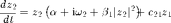
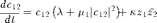
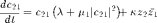

rStarCoupled11Learn
[rStar, AStar, psiStar, stability, stabType] = rStarCoupled11Learn(alpha, beta1, lambda, mu1, kappa, Omega, All)
Finds r*, A*, psi*, stability (1 or 0), and stability type (0-4) numerically for two oscillators (truncated after the cubic term) connected via a plastic 1:1 coupling. Omega is the difference between the oscillators' natural frequencies in radian. Set the optional input argument 'All' to 1 (or any nonzero value) to get both stable and unstable fixed points. (Default for All is 0, that is, rStarDriven11Learn outputs only stable fixed points.)
stability: 1 = stable, 0 = unstable
stabType: 4 = stable node, 3 = stable spiral, 2 = unstable node, 1 = unstable spiral, 0 = saddle point
Contents
Equation




function [rStar, AStar, psiStar, stability, stabType] = ... rStarCoupled11Learn(a, b1, l, m1, ka, W, All)
Check input arguments
if nargin < 7 All = 0; % default: only stable points end
Get symmetric steady-state connection amplitudes numerically
A = sqrt(roots([power(b1,2)*power(m1,2)*power(-4*b1 + ka*m1,2),... 2*b1*m1*(4*b1 - ka*m1)*(4*power(b1,2)*l + power(ka,2)*m1 - ... 2*b1*ka*(2 + a*m1 + l*m1)),16*power(b1,4)*power(l,2) + ... power(ka,4)*power(m1,2) - 2*b1*power(ka,3)*m1*(4 + 4*a*m1 + 3*l*m1) - ... 8*power(b1,3)*ka*(3*power(l,2)*m1 + 4*l*(1 + a*m1) - m1*power(W,2)) + ... 2*power(b1,2)*power(ka,2)*(8 + 16*l*m1 + 2*power(a,2)*power(m1,2) + ... 3*power(l,2)*power(m1,2) + 2*a*m1*(8 + 3*l*m1) + power(m1,2)*power(W,2)),... ka*(2*power(ka,3)*l*m1 + power(a,2)*ka*... (-(power(ka,2)*power(m1,2)) + 8*power(b1,2)*(-2 + l*m1)) - ... 8*power(b1,3)*(power(l,3) - l*power(W,2)) - ... 2*b1*power(ka,2)*(4*l + 3*power(l,2)*m1 + m1*power(W,2)) + ... 4*power(b1,2)*ka*(4*power(l,2) + power(l,3)*m1 - 2*power(W,2) + ... l*m1*power(W,2)) - 4*a*(4*power(b1,3)*power(l,2) - power(ka,3)*m1 + ... 4*b1*power(ka,2)*(1 + l*m1) - ... power(b1,2)*ka*(8*l + 3*power(l,2)*m1 + m1*power(W,2)))),... power(ka,2)*(-4*power(a,3)*ka*(-4*b1 + ka*m1) + ... power(ka*l - b1*(power(l,2) + power(W,2)),2) + ... power(a,2)*(power(ka,2)*(4 - 2*l*m1) + ... 4*power(b1,2)*(power(l,2) + power(W,2))) + ... 4*a*(power(ka,2)*l + b1*ka*(-2*power(l,2) + power(W,2)) + ... power(b1,2)*l*(power(l,2) + power(W,2)))),... -(power(a,2)*power(ka,4)*(4*power(a,2) + 4*a*l + power(l,2) + power(W,2)))])); A = A(find(imag(A)==0));
Get oscillator amplitudes
r = [sqrt((-a - sqrt(a^2+4*b1*A.^2.*(l+m1*A.^2)/ka))/(2*b1)); sqrt((-a + sqrt(a^2+4*b1*A.^2.*(l+m1*A.^2)/ka))/(2*b1))]; A = [A;A]; ind = find(imag(r)==0); r = r(ind); A = A(ind);
Get relative phases
psi = -sign(W)*acos(-(a+b1*r.^2)./A); ind = find(~isnan(psi)); r = r(ind); A = A(ind); psi = psi(ind);
Eliminate extraneous solutions
ind = find(abs(a*r+b1*r.^3+A.*r.*cos(psi)) < eps('single')); r = r(ind); A = A(ind); psi = psi(ind); ind = find(abs(-W-(ka*r.^2./A+2*A).*sin(psi)) < eps('single')); r = r(ind); A = A(ind); psi = psi(ind);
Get stability type from Jacobian matrix
stabType = zeros(size(r)); for n = 1:length(r) J = zeros(3); J(1,1) = a + 3*b1*r(n)^2 + A(n)*cos(psi(n)); J(1,2) = r(n)*cos(psi(n)); J(1,3) = -A(n)*r(n)*sin(psi(n)); J(2,1) = 2*ka*r(n)*cos(psi(n)); J(2,2) = l + 3*m1*A(n)^2; J(2,3) = -ka*r(n)^2*sin(psi(n)); J(3,1) = -2*ka*r(n)*sin(psi(n))/A(n); J(3,2) = (ka*r(n)^2/A(n)^2 - 2)*sin(psi(n)); J(3,3) = -(ka*r(n)^2/A(n) + 2*A(n))*cos(psi(n)); if ~any(isnan(J(:))) ev = eig(J); if isreal(ev) && all(ev < 0) stabType(n) = 4; % stable node elseif all(real(ev) < 0) stabType(n) = 3; % stable spiral elseif isreal(ev) && all(ev > 0) stabType(n) = 2; % unstable node elseif all(real(ev) > 0) stabType(n) = 1; % unstable spiral end % saddle pt otherwise end end stability = (stabType >= 3); % 1 = stable, 0 = unstable
Prepare output
if All % both stable and unstable fixed points rStar = r; AStar = A; psiStar = psi; else % stable points only indStab = find(stability); rStar = r(indStab); AStar = A(indStab); psiStar = psi(indStab); stability = stability(indStab); stabType = stabType(indStab); end